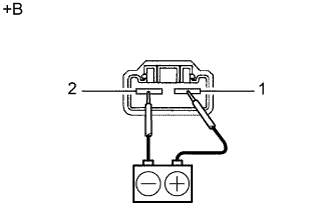

ТОПЛИВНЫЙ НАСОС (для моделей с двойным топливным баком) > ПРОВЕРКА |
| 1. ПРОВЕРЬТЕ ТОПЛИВНЫЙ НАСОС |
Проверьте сопротивление топливного насоса.
Измерьте сопротивление в соответствии со значениями, приведенными в таблице ниже.
| Контакты для подключения диагностического прибора | Условие | Заданные условия |
| 1 - 2 | 20°C (68°F) | 0,2-3,0 Ом |
|  |
Проверьте работу топливного насоса.
Подсоедините положительный (+) вывод аккумуляторной батареи к контакту 1 разъема, а отрицательный (-) – к контакту 2. Убедитесь, что насос работает.
| *a | Устройство с отсоединенным жгутом проводов (топливный насос) |